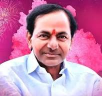
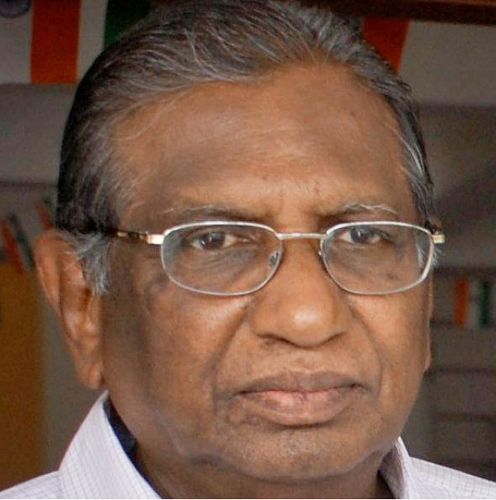

KCR
KALOJI
JAYASHANKER
 KOMARAMBHEEM
KOMARAMBHEEMKalvakuntla Chandrashekar Rao (born 17 February 1954), frequently known by his initials KCR, is an Indian politician currently representing the Gajwel Assembly constituency and serving as the leader of the opposition in the Telangana Legislative Assembly.[4] He is the founder and leader of the Bharat Rashtra Samithi, a state party in India.[5][6] After heading the Telangana Movement, he was the first Chief Minister of Telangana and held the position for almost 10 years.[7][8]
Early life
Rao was born to Raghava Rao and Venkatamma on 17 February 1954 in Chintamadaka village, Hyderabad State (present-day Telangana).[3] He is of the Velama caste.[9] Rao has nine sisters and one elder brother.[10] He attained an MA degree in Telugu literature from Osmania University, Hyderabad.[11][8]
Political career
Congress Party
Rao started his career with the Youth Congress in Medak.[7] He stood by Indira Gandhi after her defeat in the 1977 Lok Sabha polls.[12]
Independent candidate
In the 1983 Andhra Pradesh Legislative Assembly elections, Rao contested as an independent candidate in the Siddipet Assembly constituency. He lost to Ananthula Madan Mohan, a Congress candidate, by 877 votes.[13][7]
Telugu Desam Party
After the contest, in 1983, Rao joined the Telugu Desam Party (TDP). He won four consecutive Assembly elections from Siddipet (1985-1999). From 1987 to 1988, he served as the Minister of Drought & Relief in Chief Minister N. T. Rama Rao's cabinet. In 1990, he was appointed TDP convener for Medak, Nizamabad, and Adilabad districts. In 1996, he served as Transport minister in Chief Minister Nara Chandrababu Naidu's cabinet.[14][15] He also served as the deputy speaker of the Andhra Pradesh Assembly from 2000 to 2001.[12]
Jai Telangana movement
Further information: Telangana movement
K. Chandrashekhar Rao assumes the office of Labour and Employment Minister in New Delhi on 28 November 2004
On 27 April 2001, Rao resigned from the Telugu Desam Party, leaving his position of Deputy Speaker.[16] He stated that the people of the Telangana region were being discriminated against and believed that a separate state was the only solution.[17] The same day, he formed the Telangana Rashtra Samithi (TRS) Party (now called the Bharat Rashtra Samithi) at Jala Drushyam, Hyderabad to achieve Telangana statehood.[5][16] In the 2004 elections, he won from Siddipet and also the Karimnagar Lok Sabha constituency by election, both as a TRS candidate. The TRS contested the 2004 general elections in alliance with the Indian National Congress, with a promise from the Congress Party to grant Telangana statehood. Rao was one of the five TRS candidates who were elected as MPs.[18][19]
TRS was part of the United Progressive Alliance coalition government, led by Congress. Rao went on to become a Union Cabinet Minister of Labour and Employment in the UPA government.[7] In 2006, the party withdrew from the coalition, stating that the Alliance was not inclined to support a separate Telangana state, and he resigned as a MP.[20][21][22]
Rao addressing a public gathering during Telangana Agitation
In 2009, Rao won the Mahbubnagar Lok Sabha elections.[23] In November 2009, he started a hunger strike, demanding the introduction of the Telangana Bill in the Indian Parliament. Eleven days later, the Central Government initiated the process to grant Telangana statehood.[24][21]
On 16 May 2014, Rao was elected as MLA from Gajwel with a majority of 19,391 and as MP from Medak with a majority of 397,029.[25]
In Telangana, the TRS, which led the campaign for a separate state for over a decade, received the most votes, winning 11 of the 17 Lok Sabha seats and 63 of the 119 Assembly seats.[26]
Foray into national politics
In May 2019, ahead of the 2019 Indian general election, Rao attempted to set up Federal Front along with leaders of other regional political parties. The Front's aim was to bring a non-Congress, non-BJP alliance to power at the Central Government of India.[27][28]
In June 2022, Rao announced plans for a national party.[29] On 5 October 2022, the day of Vijayadashami, he renamed his party to Bharat Rashtra Samithi (BRS) at the party's Executive Council Meeting.[30]
Chief Minister of Telangana (2014–2023)
Kaloji Narayana Rao[1] (9 September 1914 – 13 November 2002) was an Indian poet, freedom fighter, anti-fascist and political activist of Telangana. He was awarded the Padma Vibhushan in 1992. The Telangana government honored Kaloji's birthday as Telangana Language Day.[2]
Education and activism
Kaloji was born on 9 September 1914 in Rattihalli village in Bijapur district, Karnataka. His mother Ramabayamma hailing from Karnataka. Father Kaloji Rangarao is from Maharashtra,[3] his elder brother, Kaloji Rameshwar Rao, an Urdu poet, played a vital role in shaping his personality.[4] Kaloji completed his primary education from Madikonda and higher education in Warangal and Hyderabad. Kaloji is a polyglot. Although he studied Telugu from an early age, he also wrote poetry in Marathi, Kannada, Hindi and Urdu. Kaloji married Rukmini Bai in 1940.
During his student days, he was deeply influenced by and participated in popular movements of the time. like the Arya Samaj Movement, especially in the domain of civil rights. He has also involved in Andhra Maha Sabha activities since its formation in 1934, and part of the Satyagraha, Osmania University Vandemataram, State Congress, Andhra Mahasabha (Telangana) and Library movements. Considered by many to be a freedom fighter,[according to whom?] he was part of the freedom movement of Hyderabad State and underwent imprisonment under the Nizam.[5]
His commitment to human rights[citation needed] made him an active member of the Tarkunde Committee. Although opposed to power and the trapping of office Kaloji looked upon elections as a democratic exercise. He contested thrice and got elected once as a member of the Andhra Pradesh Legislative Council. His most significant dispute was against Jalagam Vengal Rao, then Chief Minister of Andhra Pradesh, in 1977.
Kothapalli Jayashankar (6 August 1934 – 21 June 2011), popularly known as Professor Jayashankar, was an Indian academic and social activist. He was a leading ideologue of the Telangana Movement.[1] He fought for a separate state beginning in 1952.[2] He often stated that unequal distribution of river water was the root cause of the separate Telangana movement.[3] He was the former Vice-Chancellor of Kakatiya University and an activist in the Separate Telangana Movement.[4]
Prof. Jayashankar Telangana State Agricultural University (PJTSAU), named in honour and memory of Professor Jayashankar, is the only farm University of Telangana state which came into being in the event of the bifurcation from Acharya N. G. Ranga Agricultural University.[5]
Early life
Kothapalli Jayashankar was born in Akkampet village, Atmakur mandal, Warangal in Hyderabad State to Lakshmikantha Rao and Mahalakshmi of the Vishwakarma community.[citation needed] He did his schooling in Hanamkonda, Warangal and his MA in Economics at Banaras Hindu University, MA in Economics at Aligarh Muslim University, PhD in Economics at Osmania University, and BEd at Osmania university in Hyderabad.[citation needed]
life
During the Nizam rule in Hyderabad state, it was mandatory for all schools to sing a song praising the Nizam. When the headmaster of the Markaji High School in Hanamkonda asked his students to sing the song, Jayashankar, then a Class VI student, defied the rule and sang Vandemataram.[6]
His biography, Voduvani Muchchata, written by Kompelli Venkat Goud, was released by KCR and other prominent personalities.
Telangana movement
This section does not cite any sources. Please help improve this section by adding citations to reliable sources. Unsourced material may be challenged and removed. (January 2015) (Learn how and when to remove this message)
As a young student of intermediate, Jayashankar walked out of his class in protest against state reorganisation in 1952. He also started in a bus to participate in the 1952 Mulkhi Agitation. In 1962, he was part of a campaign which rocked the region. He joined the movement for a separate Telangana state in 1952, when he was a student leader.
As a lecturer, in 1968, he participated in the revived agitation. He carried out his struggle for Telangana through research and academic studies, and by educating people on the cause. He is known as the original Telangana ideologue. He led several agitations since 1962, transforming into a mass movement after the 1969 agitation.
Komaram Bheem (1901–1940), alternatively Kumram Bheem,[1] was a revolutionary leader in Hyderabad State of British India from the Gond tribes. Bheem, in association with other Gond leaders, led a protracted low intensity rebellion against the feudal Nizams of Hyderabad in the eastern part of the princely state during the 1930s, which contributed in the culmination of the Telangana Rebellion of 1946.
He was killed by armed policemen in 1940, subsequently lionised as a symbol of rebellion, and eulogised in Adivasi and Telugu folklore. Bheem is deified as a pen in Gond culture and is credited for coining the slogan Jal, Jangal, Zameen (transl. Water, Forest, Land) which, symbolising a sentiment against encroachment and exploitation, has been adopted by Adivasi movements as a call to action. He is also associated with the early part of the movement for Telangana statehood.
Life
Komaram Bheem was born in Sankepalli, near Asifabad in Hyderabad State, British India to a family in the Gondi tribal community,[2][self-published source?][3] on 22 October 1901.[4] Bheem grew up in the tribal populated forests within the traditional kingdoms of Chanda and Ballalpur, isolated from the rest of the world and received no formal education. He kept moving from place to place throughout his life as the Gondi people were being increasingly victimised and exploited by zamindars (transl. landlords) and businessmen, and through extortion by the jangaalat police (transl. forest police).[5]
During the 1900s, there was expansion of mining activities and strengthening of state authority in the Gondi region. Regulations introduced and enforced hampered the subsistence activities of the Gondis. Zamindars were granted lands in their regions and imposed taxes on Gondi podu farming activities, non-compliance often resulting in severe measures including forced amputations. Gondis began migrating from their traditional villages, the situation led to occasional retaliations and protests; Bheem's father was killed by forest officials in one such incident.[6][5]
Following the death of his father, Bheem and his family moved out to Sankepalli to Sardapur near Karimnagar. The Gonds who had migrated to Sardapur settled in barren land owned by the zamindar Laxman Rao; they began subsistence farming on the land and subsequently became a target for tax extraction. In a confrontation in October 1920, Bheem killed a senior official of the Nizamate, Siddiquesaab who was sent by Rao to enforce the confiscation of crops during the time of harvest. To escape capture, he ran away on foot to the city of Chanda with his friend named Kondal (known variously as Routa Kondal, Komaram Kondal and Edla Kondal). The two were granted refuge by a local publisher Vitoba who operated a printing press and distribution network across the regional railways for an anti–British anti–Nizamate magazine. Bheem learned to speak and read English, Hindi and Urdu during time working with Vitoba.[6][5]
Bheem was forced to run away again after Vitoba was arrested, on this occasion, to a tea plantation in Assam with an acquaintance at the Manchiryal railway station. He worked in the plantations for four and a half years. While doing so he became involved in labour union activities and was eventually arrested for such. Bheem escaped jail within four days, boarded a goods train and returned to Balharshah in the Nizamate. Bheem had heard of Ramji Gond in his childhood, so he decided to initiate his own struggle for the rights of the Adivasis on his return to the Nizamate. Bheem moved to Kakanghat with family and started working for Lacchu Patel who was the head of a village called Devadam. Leveraging his experience in Assam, he helped Patel in a land litigation against the Asifabad estate which made him well known in the nearby villages and in return he was granted permission by Patel to marry.[5]
Bheem married a woman named Som Bai, moved to Bhabejhari in the interior of the Gond lands and settled down to cultivate a piece of land. During the time of harvest, he was again approached by forest officials who tried to force him to leave arguing that the land belonged to the state. Bheem then tried to lobby the Nizam directly and sought to present the grievances of the Adivasis before him but he received no response. Bheem then decided to engage in armed revolution.[5] He formed clandestine associations with the banned Communist Party of India,[7] and started mobilising the Adivasi population at Jodeghat, eventually calling a council of tribal leaders from the twelve traditional districts of Ankusapur, Bhabejhari, Bhimangundi, Chalbaridi, Jodeghat, Kallegaon, Koshaguda, Linepatter, Narsapur, Patnapur, Shivaguda and Tokennavada. The council decided to form a guerilla army to protect their lands. Bheem also proposed they declare themselves an independent Gond kingdom. Some see this as a predecessor to more recent attempts to form an autonomous Gondwana.[6][5]
The council was followed by an uprising in the Gondi region which began in 1928. The forces mobilised to attack the zamindars in Babejhari and Jodeghat. In response, the Nizam recognised Bheem as leader of the Gond rebels and sent the collector at Asifabad to negotiate with him, offering assurances of land grants to the Gonds. Bheem rejected the initial offer stating that they sought justice and instead demanded regional autonomy for the Gonds, eviction of the forest officials and zamindars, and the release of all Gond prisoners in the penal system of Hyderabad state. The demands were rejected and the conflict continued as a low intensity guerilla campaign over the following decade. Bheem directly commanded 300 men under him and operated out of Jodeghat. He is said to have coined the slogan Jal, Jangal, Zameen (transl. Water, Forest, Land) during this period.[6][5][8]